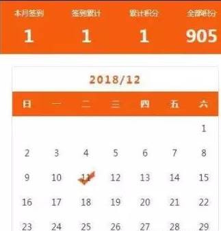

在网站开发过程中我们会经常用到签到功能来奖励用户积分，或者做一些其他活动。这次项目开发过程中做了日历签到，因为没有经验所有走了很多弯路，再次记录过程和步骤。
1.日历签到样式：使用的是calendar日历插件

前台代码
1 <!doctype html>
2 <html>
3 <head>
4 <meta charset="utf-8">
5 <title>日历签到</title>
6 <meta name="keywords" content="日历签到"/>
7 <meta name="description" content="日历签到"/>
8 <meta content="telephone=no" name="format-detection" />
9 <meta content="width=device-width, initial-scale=1.0, maximum-scale=1.0, user-scalable=0;" name="viewport" />
10 <meta content="yes" name="apple-mobile-web-app-capable" />
11 <meta content="black" name="apple-mobile-web-app-status-bar-style" />
12 <link href="__TPL__/css/index.css" rel="stylesheet" type="text/css">
13 <link rel="stylesheet" type="text/css" href="__TPL__/css/main.css">
14 <link rel="stylesheet" type="text/css" href="__TPL__/css/self.css">
15 <link rel="stylesheet" type="text/css" href="__TPL__/css/swiper.min.css">
16 </head>
17 <body style="background:#fff;">
18 <div class="warpper">
19 <div class="sign">
20 <ul>
21 <li><span>本月签到</span><b><?if(is_array($sign)){echo count($sign);}else{echo '0';}?></b></li>
22 <li><span>签到累计</span><b><?php if(is_array($allsign)){echo count($allsign);}else{echo '0';}?></b></li>
23 <li><span>累计积分</span><b><?php if(is_array($allsign)){echo count($allsign)*$config['site_praise'];}else{echo '0';}?></b></li>
24 <li><span>全部积分</span><b><?php echo ceil($user['integral']);?></b></li>
25 </ul>
26 </div>
27 <input type="hidden" name="" value="__URL__/checksign.html" id="sign">
28 <div class="singBox" id="calendar"></div>
29 <div class="qdbox"><a href="javascript:;" class="qd_btn" onclick="sign_()" style="background: <?php echo is_sign_now()?'':'rgb(135, 135, 135)'; ?>" ><?php echo is_sign_now()?'签到':'已签到'; ?></a></div>
30 <script src="__TPL__/js/jquery.min.js"></script>
31 <script src="__TPL__/js/swiper.min.js"></script>
32 <script src="__TPL__/js/calendar.js"></script>
33 <script src="__TPL__/js/js.js"></script>
34 <script type="text/javascript" src="__TPL__/js/layer/2.1/layer.js"></script>
35 {include file="footer"}
36
37 <script type="text/javascript">
38 $(function(){
39 var arr='';
40 //var signList=[{"signDay":"09"},{"signDay":"11"}];
41 <?php if(is_array($sign)){ foreach($sign as $vo){ ?>
42 arr+="{'signDay':'<?php echo $vo['day'];?>'},";
43 <?php }?>
44 arr = arr.substr(0,arr.length-1);
45 arr ="["+arr+"]";
46 var signList = eval('(' + arr + ')');
47 <?php }else{?>
48 var signList=[];
49 <?php }?>
50
51 calUtil.init(signList);
52 });
53 </script>
54 <script type="text/javascript">
55 function sign_(){
56 $.ajax({
57 type:'GET',
58 url:"__URL__/checksign.html",
59 dataType:'json',
60 success:function(res){
61 if(res.result==1){
62 window.location.href="__URL__/sign.html"
63 }else{
64 alert(res.msg);
65 }
66 }
67 })
68 }
69 </script>
70
插件calendar.js 修改如下：
1 var calUtil = {
2 //当前日历显示的年份
3 showYear:2015,
4 //当前日历显示的月份
5 showMonth:1,
6 //当前日历显示的天数
7 showDays:1,
8 eventName:"load",
9 //初始化日历
10 init:function(signList,s=''){
11 calUtil.setMonthAndDay();
12 if (typeof(s) == 'undefined'){
13 }else{
14 signList.splice('','',s);
15 }
16 calUtil.draw(signList);
17 calUtil.bindEnvent(signList);
18 },
19 draw:function(signList){
20 //绑定日历
21 //alert(signList.length);
22 // console.log(signList);
23 if(signList.length > 21){
24 //alert(21);
25 $("#sign_note").empty();
26 $("#sign_note").html('<button class="sign_contener" type="button"><i class="fa fa-calendar-check-o" aria-hidden="true"></i> 已达标，获取1次抽奖</button>');
27 }
28 var str = calUtil.drawCal(calUtil.showYear,calUtil.showMonth,signList);
29 $("#calendar").html(str);
30 //绑定日历表头
31 var calendarName=calUtil.showYear+"/"+calUtil.showMonth+"";
32 $(".calendar_month_span").html(calendarName);
33 },
34 //绑定事件
35 bindEnvent:function(signList){
36 // //绑定上个月事件
37 // $(".calendar_month_prev").click(function(){
38 // //ajax获取日历json数据
39 // //var signList=[{"signDay":"10"},{"signDay":"11"},{"signDay":"12"},{"signDay":"13"}];
40 // calUtil.eventName="prev";
41 // calUtil.init(signList);
42 // });
43 // //绑定下个月事件
44 // $(".calendar_month_next").click(function(){
45 // //ajax获取日历json数据
46 // //var signList=[{"signDay":"10"},{"signDay":"11"},{"signDay":"12"},{"signDay":"13"}];
47 // calUtil.eventName="next";
48 // calUtil.init(signList);
49 // });
50
51 $(".calendar_record").click(function(){
52 //ajax获取日历json数据
53 // console(typeof(signList)+"yxy");
54 //var signList=[{"signDay":"10"},{"signDay":"11"},{"signDay":"12"},{"signDay":"13"}];
55 //var tmp = {"signDay":$(this).html()};
56 //if (typeof(signList) == 'undefined'){
57 //不做处理
58 //}else{
59 // signList.splice('','',tmp);
60 // console.log(signList);
61 // calUtil.init(signList);
62 // }
63 //alert($(this).html());
64 var tmp = {"signDay":$(this).html()};
65 console.log(tmp.signDay)
66
67 // if(tmp.signDay==11){
68 //执行签到
69 $.ajax({
70 type:'POST',
71 url:"checksign.html",
72 data:{day:tmp.signDay},
73 dataType:'json',
74 success:function(res){
75 // if(res.result==1){
76 // calUtil.init(signList,tmp);
77 // }else{
78 alert(res.msg);
79 location.reload(true);
80 // }
81
82 }
83 })
84
85 // }else{
86 // alert("请签到当天日期")
87 // }
88 });
89 },
90 //获取当前选择的年月
91 setMonthAndDay:function(){
92 switch(calUtil.eventName)
93 {
94 case "load":
95 var current = new Date();
96 calUtil.showYear=current.getFullYear();
97 calUtil.showMonth=current.getMonth() + 1;
98 break;
99 case "prev":
100 var nowMonth=$(".calendar_month_span").html().split("年")[1].split("月")[0];
101 calUtil.showMonth=parseInt(nowMonth)-1;
102 if(calUtil.showMonth==0)
103 {
104 calUtil.showMonth=12;
105 calUtil.showYear-=1;
106 }
107 break;
108 case "next":
109 var nowMonth=$(".calendar_month_span").html().split("年")[1].split("月")[0];
110 calUtil.showMonth=parseInt(nowMonth)+1;
111 if(calUtil.showMonth==13)
112 {
113 calUtil.showMonth=1;
114 calUtil.showYear+=1;
115 }
116 break;
117 }
118 },
119 getDaysInmonth : function(iMonth, iYear){
120 var dPrevDate = new Date(iYear, iMonth, 0);
121 return dPrevDate.getDate();
122 },
123 bulidCal : function(iYear, iMonth) {
124 var aMonth = new Array();
125 aMonth[0] = new Array(7);
126 aMonth[1] = new Array(7);
127 aMonth[2] = new Array(7);
128 aMonth[3] = new Array(7);
129 aMonth[4] = new Array(7);
130 aMonth[5] = new Array(7);
131 aMonth[6] = new Array(7);
132 var dCalDate = new Date(iYear, iMonth - 1, 1);
133 var iDayOfFirst = dCalDate.getDay();
134 var iDaysInMonth = calUtil.getDaysInmonth(iMonth, iYear);
135 var iVarDate = 1;
136 var d, w;
137 aMonth[0][0] = "日";
138 aMonth[0][1] = "一";
139 aMonth[0][2] = "二";
140 aMonth[0][3] = "三";
141 aMonth[0][4] = "四";
142 aMonth[0][5] = "五";
143 aMonth[0][6] = "六";
144 for (d = iDayOfFirst; d < 7; d++) {
145 aMonth[1][d] = iVarDate;
146 iVarDate++;
147 }
148 for (w = 2; w < 7; w++) {
149 for (d = 0; d < 7; d++) {
150 if (iVarDate <= iDaysInMonth) {
151 aMonth[w][d] = iVarDate;
152 iVarDate++;
153 }
154 }
155 }
156 return aMonth;
157 },
158 ifHasSigned : function(signList,day){
159 var signed = false;
160 $.each(signList,function(index,item){
161 if(item.signDay == day) {
162 signed = true;
163 return false;
164 }
165 });
166 return signed ;
167 },
168 drawCal : function(iYear, iMonth ,signList) {
169 var myMonth = calUtil.bulidCal(iYear, iMonth);
170 var htmls = new Array();
171 htmls.push("<div class='sign_main' id='sign_layer'>");
172 htmls.push("<div class='sign_succ_calendar_title'>");
173 //htmls.push("<div class='calendar_month_next'>下月</div>");
174 //htmls.push("<div class='calendar_month_prev'>上月</div>");
175 htmls.push("<div class='calendar_month_span'></div>");
176 htmls.push("</div>");
177 htmls.push("<div class='sign_equal' id='sign_cal'>");
178 htmls.push("<div class='sign_row'>");
179 htmls.push("<div class='th_1 bold'>" + myMonth[0][0] + "</div>");
180 htmls.push("<div class='th_2 bold'>" + myMonth[0][1] + "</div>");
181 htmls.push("<div class='th_3 bold'>" + myMonth[0][2] + "</div>");
182 htmls.push("<div class='th_4 bold'>" + myMonth[0][3] + "</div>");
183 htmls.push("<div class='th_5 bold'>" + myMonth[0][4] + "</div>");
184 htmls.push("<div class='th_6 bold'>" + myMonth[0][5] + "</div>");
185 htmls.push("<div class='th_7 bold'>" + myMonth[0][6] + "</div>");
186 htmls.push("</div>");
187 var d, w;
188 for (w = 1; w < 6; w++) {
189 htmls.push("<div class='sign_row'>");
190 for (d = 0; d < 7; d++) {
191
192 var ifHasSigned = calUtil.ifHasSigned(signList,myMonth[w][d]);
193 console.log("001:"+ifHasSigned);
194 if(ifHasSigned && typeof(myMonth[w][d]) != 'undefined'){
195 htmls.push("<div class='td_"+d+" on'>" + (!isNaN(myMonth[w][d]) ? myMonth[w][d] : " ") + "</div>");
196 } else {
197 htmls.push("<div class='td_"+d+" calendar_record'>" + (!isNaN(myMonth[w][d]) ? myMonth[w][d] : " ") + "</div>");
198 }
199 }
200 htmls.push("</div>");
201 }
202 htmls.push("</div>");
203 htmls.push("</div>");
204 htmls.push("</div>");
205 return htmls.join('');
206 }
207 };
208
PHP代码的实现
1 //签到（status=1）
2 public function sign(){
3 //当月累计签到
4 $sign = $this->model->table('praise')->where('uid='.$_SESSION['user']['uid'].' and time>'.strtotime(date("Y-m-01",time())))->select();
5 if($sign){
6 foreach($sign as $k=>$v){
7 $sign[$k]['day']=date('d',$v['time']);
8 }
9 }
10 //所有签到
11 $allsign = $this->model->table('praise')->where('uid='.$_SESSION['user']['uid'].' and status=1')->select();
12 $this->assign('allsign', $allsign);
13 $this->assign('sign', $sign);
14 $this->assign('user', $_SESSION['user']);
15 $this->display('member_sign');
16 }
17 //点击签到
18 public function checksign(){
19 if($_POST['day']){
20 $day=intval($_POST['day']);
21 }else{
22 $day=date("d",time());
23 }
24 if($day!=date("d",time())){
25 $data['msg']="请在当前日期点击签到";
26 echo json_encode($data);
27 return;
28 }
29 $condition2 = 'uid='.$_SESSION['user']['uid'];
30 $condition2 .= " AND DATE_FORMAT(FROM_UNIXTIME(time),'%Y-%m-%d') = '".date("Y-m-d",time())."'";
31 $sign = $this->model->table('praise')->where($condition2)->find();
32 //判断是否已经签到
33 if (empty($sign)) {
34 //新增积分
35 $this->model->table('member')->data('integral=integral+'.$this->config['site_praise'].',allintegral=allintegral+'.$this->config['site_praise'])->where('uid='.$_SESSION['user']['uid'])->update();//增加积分
36 $arr['subject']="签到赠送积分";
37 $arr['uid'] = $_SESSION['user']['uid'];
38 $arr['integral'] = $this->config['site_praise'];
39 $arr['time']=time();
40 $this->model->table('member_integral')->data($arr)->insert();
41
42 $updateuser = $this->model->table('member')->where('uid='.$_SESSION['user']['uid'])->find();//购物后更新session积分
43 $_SESSION['user']['integral'] = $updateuser['integral'];
44 $_SESSION['user']['allintegral'] = $updateuser['allintegral'];
45
46
47 $data['uid'] = $_SESSION['user']['uid'];
48 //$data['pid'] = $item;
49 $data['status'] = 1;
50 $data['time'] = time();
51 $this->model->table('praise')->data($data)->insert();
52 //$this->model->table('post')->data("digg=digg+1")->where('id='.$id)->update();
53 //$this->model->table('member_comment')->data("praise=praise+1")->where('id='.$item)->update();
54 $this->jssuccess('签到成功！');
55 } else {
56 $this->jserror('已经签过到了。');
57 }
58 }
59
60
61 //判断是否已经签到
62 function is_sign_now(){
63 $condition2 = 'uid='.$_SESSION['user']['uid'];
64 $condition2 .= " AND DATE_FORMAT(FROM_UNIXTIME(time),'%Y-%m-%d') = '".date("Y-m-d",time())."'";
65 $sign = module('common')->model->table('praise')->where($condition2)->find();
66 //判断是否已经签到
67 if (empty($sign)) {
68 return true;
69 }else{
70 return false;
71 }
72 }